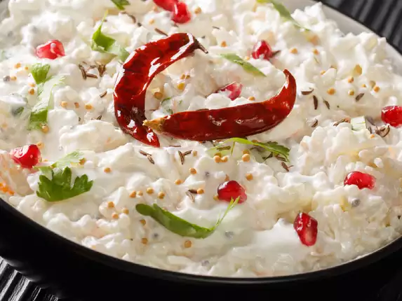

Curd Rice is a comforting South Indian dish made with rice and yogurt, often tempered with spices and garnished with coriander. It's a perfect dish for a light meal and is both cooling and satisfying.
Ingredients
- 1 cup Rice
- 1 1/2 cups Yogurt
- 1/2 tsp Mustard Seeds
- 1/2 tsp Cumin Seeds
- 1/2 tsp Turmeric Powder
- 1/2 tsp Ginger, grated
- 2 Green Chilies, chopped
- 1/2 cup Curry Leaves
- 2 tbsp Oil
- Salt to taste
- Coriander Leaves for garnish
Step-by-Step Instructions
- Cook the rice and let it cool.
- In a pan, heat oil and add mustard seeds, cumin seeds, and turmeric powder. Once the seeds start to splutter, add ginger, green chilies, and curry leaves.
- Mix the yogurt into the cooled rice, and add the tempering mixture. Stir well and season with salt.
- Garnish with coriander leaves and serve chilled or at room temperature.